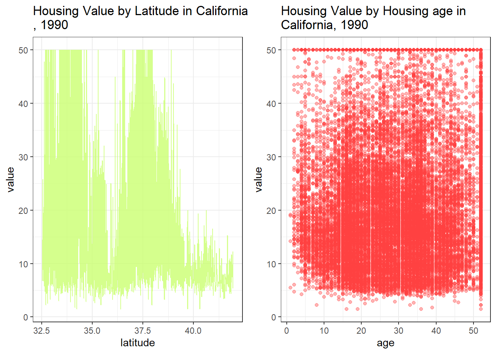
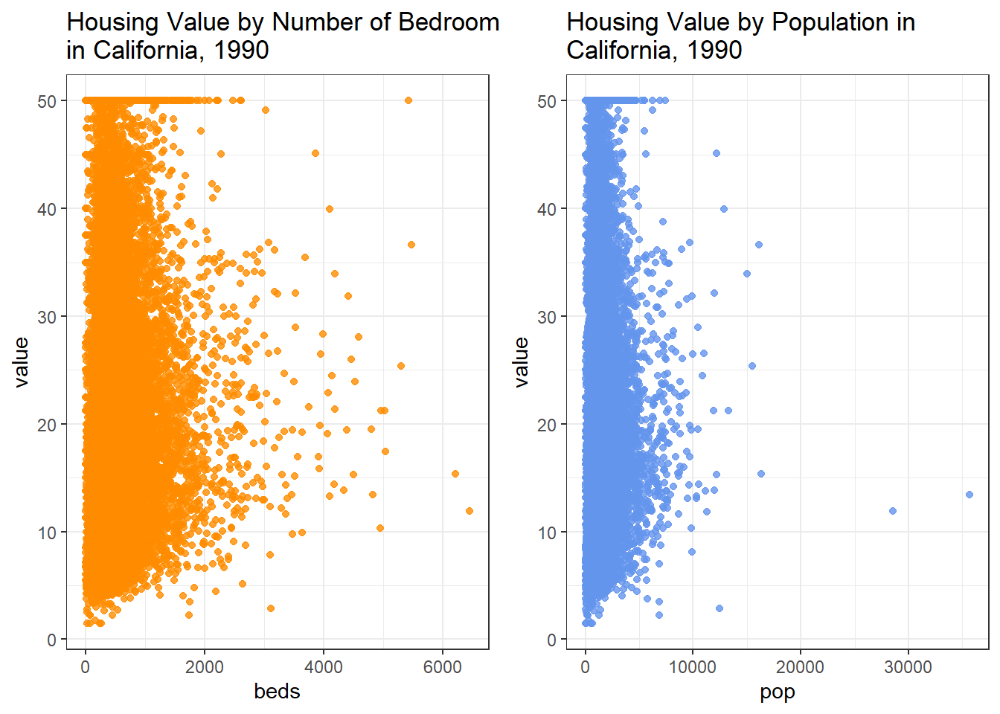
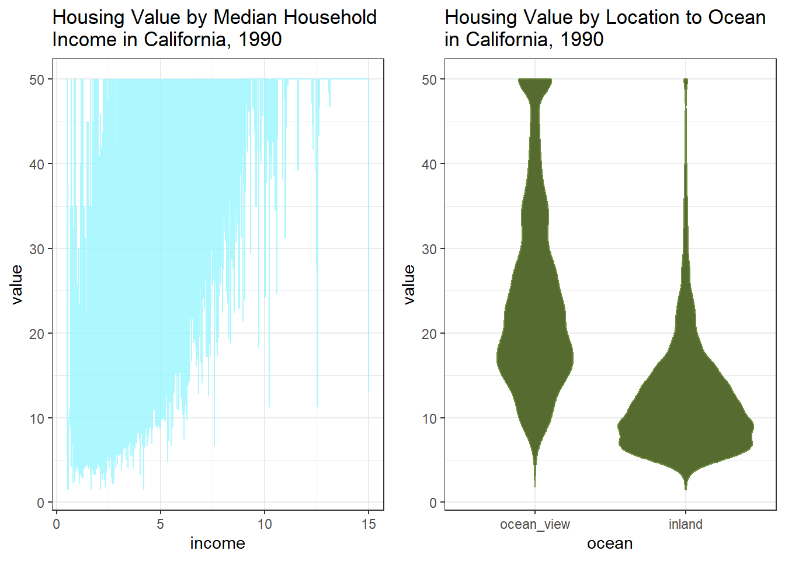
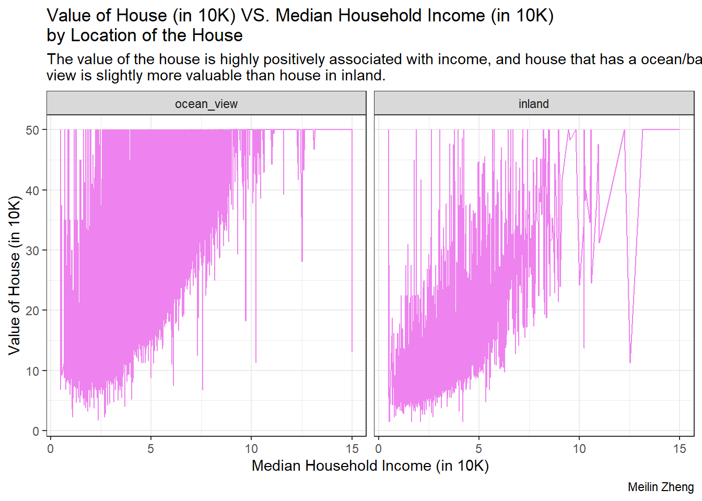
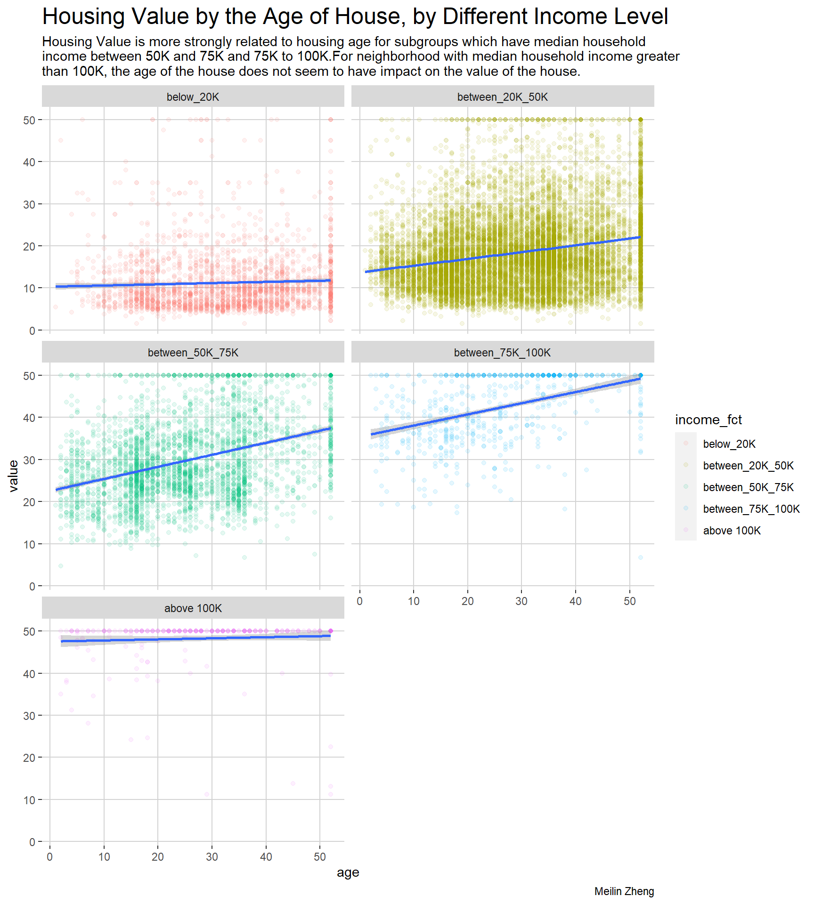

data <- read.csv("housing.csv")
library(dplyr)
library(tidyr)Example Analysis
Note
Note that this is only a simple data analysis. This is only an illustration on wrangling, exploring the data using different packages in R (e.g. tidyr, ggplot2) and show the process and results on a quarto website. No complex model is being built.
What is the question?
California housing price is always a hot topic. In this analysis example, the main question is to investigate what factors are associated with California housing price.
Who is the intended audience?
The main audience is general public who are interested in the housing market back in time in 1990.
Link to where the data come from
Data dictionary
The data dictionary below was selected from the Kaggle Website. Please click on this link for reference.
longitude : A measure of how far west a house is; a higher value is farther west
latitude: A measure of how far north a house is; a higher value is farther north
age: Median age of a house within a block; a lower number is a newer building
rooms: Total number of rooms within a block
beds: Total number of bedrooms within a block
pop: Total number of people residing within a block
households: Total number of households, a group of people residing within a home unit, for a block.
income: Median income for households within a block of houses (measured in tens of thousands of US Dollars)
value: Median house value for households within a block (measured in tens of thousands of US Dollars)
ocean: Location of the house w.r.t ocean/sea
Data cleaning and Wrangling
# Structure of the original dataset
str(data)'data.frame': 20640 obs. of 10 variables:
$ longitude : num -122 -122 -122 -122 -122 ...
$ latitude : num 37.9 37.9 37.9 37.9 37.9 ...
$ housing_median_age: num 41 21 52 52 52 52 52 52 42 52 ...
$ total_rooms : num 880 7099 1467 1274 1627 ...
$ total_bedrooms : num 129 1106 190 235 280 ...
$ population : num 322 2401 496 558 565 ...
$ households : num 126 1138 177 219 259 ...
$ median_income : num 8.33 8.3 7.26 5.64 3.85 ...
$ median_house_value: num 452600 358500 352100 341300 342200 ...
$ ocean_proximity : chr "NEAR BAY" "NEAR BAY" "NEAR BAY" "NEAR BAY" ...library(forcats)
#renames variables
colnames(data) <- c("logitude", "latitude", "age", "rooms", "beds", "pop", "households", "income", "value", "ocean")
data %>% group_by(ocean) %>% summarise(count = n())# A tibble: 5 × 2
ocean count
<chr> <int>
1 <1H OCEAN 9136
2 INLAND 6551
3 ISLAND 5
4 NEAR BAY 2290
5 NEAR OCEAN 2658#Since we only have 5 observations for island, I excluded these 5 observations
data <- data %>% filter(ocean != "ISLAND")
#make ocean as a factor
data <- data %>% mutate(ocean = as.factor(ocean))
#Omit NAs if there is any
#unique(is.na(data))
data <- data %>% drop_na()
#create a factor for income
data <- data %>% mutate(
income_fct = case_when(
income < 2 ~ 'below_20K',
income >= 2 & income <= 5 ~ 'between_20K_50K',
income > 5 & income <= 7.5 ~ 'between_50K_75K',
income > 7.5 & income <= 10 ~ 'between_75K_100K',
income >= 10 ~ 'above 100K'
),
income_fct = factor(income_fct, levels = c('below_20K', 'between_20K_50K', 'between_50K_75K', 'between_75K_100K', 'above 100K')),
ocean = fct_collapse(ocean, ocean_view = c('<1H OCEAN', "NEAR BAY", "NEAR OCEAN"), inland = c("INLAND")),
value = value/10000
)#Structure of data after data wranggling
str(data)'data.frame': 20428 obs. of 11 variables:
$ logitude : num -122 -122 -122 -122 -122 ...
$ latitude : num 37.9 37.9 37.9 37.9 37.9 ...
$ age : num 41 21 52 52 52 52 52 52 42 52 ...
$ rooms : num 880 7099 1467 1274 1627 ...
$ beds : num 129 1106 190 235 280 ...
$ pop : num 322 2401 496 558 565 ...
$ households: num 126 1138 177 219 259 ...
$ income : num 8.33 8.3 7.26 5.64 3.85 ...
$ value : num 45.3 35.9 35.2 34.1 34.2 ...
$ ocean : Factor w/ 2 levels "ocean_view","inland": 1 1 1 1 1 1 1 1 1 1 ...
$ income_fct: Factor w/ 5 levels "below_20K","between_20K_50K",..: 4 4 3 3 2 2 2 2 2 2 ...Exploration of Associations
library(ggplot2)
p1 <- ggplot(data) + geom_line(aes(x = latitude, y = value), alpha = 0.8, color = "darkolivegreen1") + theme_bw() + labs(title = "Housing Value by Latitude in California\n, 1990")
p2 <- ggplot(data) + geom_point(aes(x = age, y = value), alpha = 0.4, color = "brown1") + theme_bw() + labs(title = "Housing Value by Housing age in\nCalifornia, 1990")
p3 <- ggplot(data) + geom_point(aes(x = beds, y = value), alpha = 0.8, color = "darkorange") + theme_bw() + labs(title = "Housing Value by Number of Bedrooms\nin California, 1990")
p4 <- ggplot(data) + geom_point(aes(x = pop, y = value), alpha = 0.8, color = "cornflowerblue") + theme_bw() + labs(title = "Housing Value by Population in\nCalifornia, 1990")
p5 <- ggplot(data) + geom_line(aes(x = income, y = value), alpha = 0.8, color = "cadetblue1") + theme_bw() + labs(title = "Housing Value by Median Household\nIncome in California, 1990")
p6 <- ggplot(data) + geom_violin(aes(x = ocean, y = value), color = "darkolivegreen4", fill = "darkolivegreen") + theme_bw() + labs(title = "Housing Value by Location to Ocean\nin California, 1990")
library(ggpubr)
ggarrange(p1, p2, ncol = 2)
ggarrange(p3, p4, ncol = 2)
ggarrange(p5, p6, ncol = 2)
Tip
Housing value is shown to be positively correlated with median household income. Also, there might be a slightly negative association between latitude and housing value. Moreover, the housing value located in inland clearly has a lower value than housings which is close to or have an ocean/bay view.
More on Exploration of Associations
p <- ggplot(data) + geom_line(aes(y = value, x = income),color = "violet") + facet_wrap(.~ocean, ncol=2) + labs(title = "Value of House (in 10K) VS. Median Household Income (in 10K)\nby Location of the House", y = "Value of House (in 10K)", x = 'Median Household Income (in 10K)', subtitle = "The value of the house is highly positively associated with income, and house that has a ocean/bay\nview is slightly more valuable than house in inland.", caption = "Meilin Zheng") + theme_bw()
p
ggplot(data) + geom_point(aes(x = age, y = value, color = income_fct), alpha = 0.1) + geom_smooth(aes(x = age, y = value), method = lm) + facet_wrap(.~income_fct, ncol=2) + theme(panel.background = element_rect(fill = "white"), panel.grid.major = element_line(colour = "lightgrey"), plot.title = element_text(size = 18)) + labs(title = "Housing Value by the Age of House, by Different Income Level", caption="Meilin Zheng", subtitle = "Housing Value is more strongly related to housing age for subgroups which have median household\nincome between 50K and 75K and 75K to 100K.For neighborhood with median household income greater\nthan 100K, the age of the house does not seem to have impact on the value of the house.") 
Linear Regression Model
The idea of building a regression model comes from Li (2022). The model from Li (2022) is used to do prediction, which is much more complex. The model built below is only a toy example, and the model assumptions needs to be checked.
model <- lm(value ~ income + age + ocean, data)
summary(model)
Call:
lm(formula = value ~ income + age + ocean, data = data)
Residuals:
Min 1Q Median 3Q Max
-54.732 -4.724 -1.294 2.986 47.483
Coefficients:
Estimate Std. Error t value Pr(>|t|)
(Intercept) 5.55790 0.20231 27.47 <2e-16 ***
income 3.81423 0.02838 134.42 <2e-16 ***
age 0.09789 0.00428 22.87 <2e-16 ***
oceaninland -7.68836 0.11828 -65.00 <2e-16 ***
---
Signif. codes: 0 '***' 0.001 '**' 0.01 '*' 0.05 '.' 0.1 ' ' 1
Residual standard error: 7.353 on 20424 degrees of freedom
Multiple R-squared: 0.5941, Adjusted R-squared: 0.5941
F-statistic: 9966 on 3 and 20424 DF, p-value: < 2.2e-16Summary
In summary, through data visualization and building a simple linear regression, we explored a couple of possible factors that influence the housing price in California. For example, neighborhood median housing income is highly associated with housing price. The higher the income, the higher the housing value. This is similar to the conclusion reported by Cohen (2017) that GDP largely influence the housing price. Ocean view is another important factor that influences the housing value in California. For houses that are close to the ocean view or have a bay/ocean view, the housing price is much higher ($768836 higher on average) than the houses in inland. Interestingly, age does not influence the housing price conditioning on the subgroup with income greater than 100K. These three factors are also statistically significant.
The data is from year 1990, so it might not be able to predict the current housing price well. However, it still serves as a purpose to inform people about what are the important factors that influence housing price.
The Fitted Regression Model (baseline: houses with/near ocean/bay view)
\[\widehat{\text{value}} = 5.5579 + 3.81423*income + 0.09789*\text{age} - 7.68836*\text{I}(\text{ocean = inland})\]
Note
The functions being used in this analysis example is written below:
dplyr: group_by(), summarise(), mutate(), filter(), is.na(), case_when().
tidyr: drop_na().
ggplot2: geom_point(), geom_line(), geom_violin(), geom_histogram(), geom_smooth(), facet_wrap(), theme(), labs()…
References
Cohen, Viktorija. 2017. “The Analysis of the Determinants of Housing Prices.” Independent Journal of Management & Production 8 (1): 49–63.
Li, Xinshu. 2022. “Prediction and Analysis of Housing Price Based on the Generalized Linear Regression Model.” National Library of Medicine.
Pace, R Kelley, and Ronald Barry. 1997. “Sparse Spatial Autoregressions.” Statistics and Probability Letters 33 (3): 291–97.
Zhao, Zhichun. 2021. “Information Visualization.” 1990 California Housing price -- Information Visualization (prattsi.org).